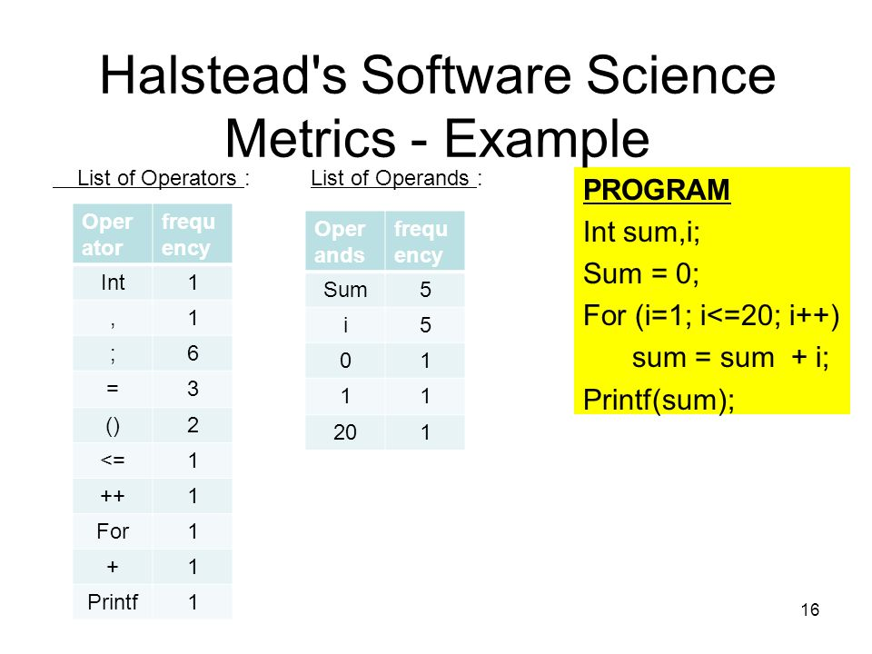
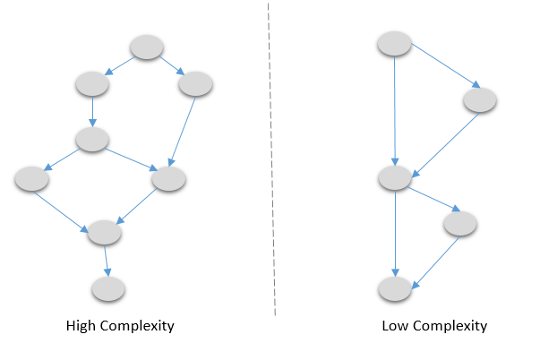
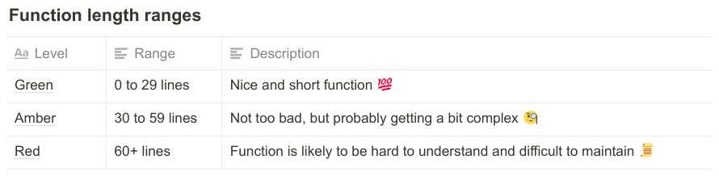
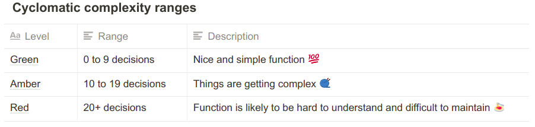
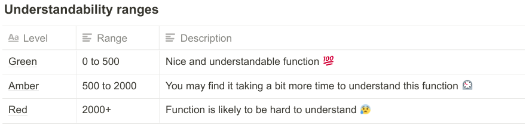
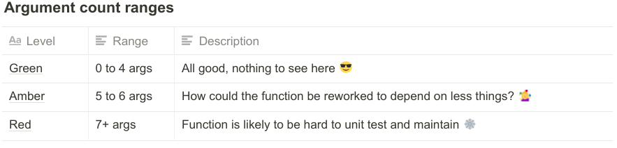
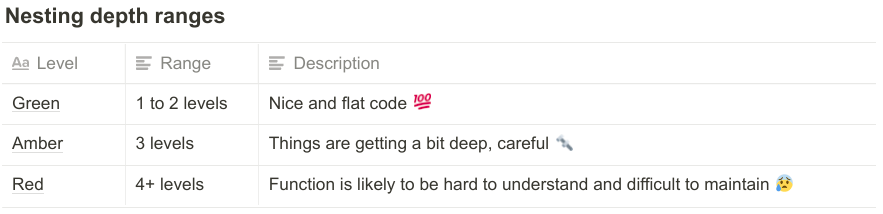

Практическая реализация метрик кода в Visual Studio Code и их применение
Метрики
- Метрики размера программ
- Метрики сложности потока управления программ
- Метрики сложности потока данных программ
Метрики размера программ 
Метрики сложности потока управления программ 
Метрики сложности потока данных программ
Метрики в VS Code

Длина функции
Цикломатическая сложность
Понятность
Число аргументов
Глубина вложенности
Плотность комментариев
Использование метрик
method 'init'
async init(): Promise {
try {
await this.postgresDb.init();
await this.redshiftDb.init();
} catch (err) {
console.log('CombinedDB init Error ' + (err as Error).message);
};
return this;
};
method 'end'
async end(callback?: () => void) {
try {
if (callback) {
await this.postgresDb.end(callback);
await this.redshiftDb.end(callback);
} else {
await this.postgresDb.end();
await this.redshiftDb.end();
};
} catch (err) {
console.log('CombinedDB end Error ' + (err as Error).message);
};
};